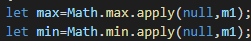
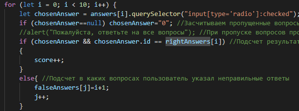

JavaScript
Инструмент для создания живых веб-страницИзначально JavaScript был создан, чтобы «сделать веб-страницы живыми».
Программы на этом языке называются скриптами. Они могут встраиваться в HTML и выполняться автоматически при загрузке веб-страницы.
Скрипты распространяются и выполняются, как простой текст. Им не нужна специальная подготовка или компиляция для запуска. Это отличает JavaScript от другого языка – Java.
В браузере для JavaScript доступно всё, что связано с манипулированием веб-страницами, взаимодействием с пользователем и веб-сервером. Например, в браузере JavaScript может:
- Запоминать данные на стороне клиента (local storage).
- Реагировать на действия пользователя, щелчки мыши, перемещения указателя, нажатия клавиш.
- Отправлять сетевые запросы на удалённые сервера, скачивать и загружать файлы (технологии AJAX и COMET).
- Получать и устанавливать куки, задавать вопросы посетителю, показывать сообщения.
- Добавлять новый HTML-код на страницу, изменять существующее содержимое, модифицировать стили.
Например, при добавлении совсем простых стилевых элементов, особенно если их совсем мало лучше использовать CSS, чтобы не создавать лишних файлов
Итак, давайте рассмотрим ряд примеров, которые демонстрируют возможности, которые можно получить при использовании Javascript.
Для отображения имени пользователя после перезагрузки страницы была использована технология Local Storage (локальное хранилище). Мы создали переменную, в к-ю передали значение имени, введенного пользователем (при помощи метода getElementById()), а затем сохранили ее в локальное хранилище. Таким образом, при надобности мы всегда сможем "достать" имя пользователя из Local Storage и использовать его.
Пожалуйста, введите свое имя:
Для нахождения площади треугольника мы создали переменные side и height, а затем передали в них значения (при помощи метода getElementById()), введенные пользователем. Затем мы посчитали площадь по формуле и при помощи методов getElementById() и innerHTML() (чтобы получить содержимое элемента) присвоили нужному элементу ранее посчитанное значение площади.
1)Математические вычисления
На веб-страницах очень часто возникает необходимость произвести те или иные вычисления.С помощью Javascript это можно легко сделать!
Например, введите основание и высоту треугольника в одной ед. измерения:
Для сравнения введенных строк мы создали две переменные: st1 и st2, в которые передали введенные пользователем строки. Затем с помощью операторов if-else и свойства строк length мы сраниваем длины введенных строк, если они равны, то мы присваиваем элементу значение True с помощью getElementById(), иначе значение False.
2)Сравнение введенных строк
Используя Javascript вы можете производить сравнение введенных данных. Это особенно актуально при выборе нового пароля на различных веб-страницах. То есть при двукратном его введении вы можете удостовериться в правильности написания.
Рассмотрим более простой пример, где проверяться будет не набор символов, а их количество. При одинаковом количестве введенных символов вы получите значение true.
Введите вашу первую строку
Введите вашу вторую строку
Для нахождения минимума и максимума во введенном массиве мы создаем переменную и передаем в нее строку, которую ввел пользователь, разделяя ее на элементы массива методом split(). Обрабатываем случай, когда пользователь ввел не 5 элементов (просим повторить ввод с нужным количеством). Затем ищем максимальный и минимальный элемент с помощью ф-ий Math.max.apply() и Math.min.apply(), и передаем результат в переменные max и min, а затем выводим их с помощью getElementById().
3)Определение максимального и минимального значения среди введенных
С помощью JS можно узнать максимальный и минимальный элемент введенного числового массива.
Введите пять чисел через пробел
Для таймера мы создаем переменные count, minute = 0, second = 0 и hour = 0. Затем мы создаем переменную с именем Timer, делаем внутри нее метод addTime(), который будет работать как своеобразные часы (используем методы getElementById().innerHTML и window.setTimeout()). Затем создаем методы start() (создаем новую переменную Timer), pause() (очищаем count и останавливаем наши часы) и reset() (обнуляем все данные), которые потом привяжем к кнопкам на экране пользователя.
4)Таймер
0
0 0
0
0 0
0
0 0
Для теста мы создаем переменные answers (куда передадим с помощью метода querySelectorAll() все элементы div с вопросами), score, rightAnswers (куда передадим массив с id правильных ответов), falseAnswers и j. Затем в цикле создадим переменную chosenAnswers, куда с каждым проходом по циклу будем присваивать отмеченный пользователем ответ (из answers). Если попадается пустой вопрос, мы засчитываем его за неправильный (в массив falseAnswers), в остальных случаях мы сверяем отмеченный пользователем ответ с эл-ми массива rightAnswers, если ответ правильный, прибавляем пользователю очки, если нет, то запоминаем (в массив falseAnswers) в каком вопросе он ошибся.
5)Тест на знание JavaScript
Для проверки своих знаний вы можете пройти тест по JS. Выберите по каждому вопросу один вариант ответа. После отправки вы сможете посмотреть свой результат.